CDL 2026 hands-on: an evidence-first knowledge map
Connected Data London, 11 November 2026. Weidong Yang (Kineviz) and Mengjia Kang. A step-by-step guide to the notebook CDL Exercises in the project CDL2026_SEC10K.
Bottom line: you will open one project, open one notebook, and click through eight short exercises (plus an optional ninth). Each exercise has a button that loads a ready-made picture of the graph (a view), a live table, and one question to discuss. You don't need to write any queries.
1. Get started
The graph was built from 2,068 SEC 10-K filings by 438 companies (2021–2025). An LLM read three sections of each filing (Business, Risk Factors, and Management's Discussion) and wrote down the competitors, risks, markets and opportunities it found. Every one of those claims keeps the sentence it came from and a link back to the filing.
Open the project CDL2026_SEC10K on cloud.kineviz.com. The start screen lists the exercise views under Recent Views; you can also open them from there.
Click the Notebook icon in the left-hand icon strip (an open book), then open CDL Exercises.md.
Using Kineviz Desktop instead? Download the whole project as one file and import it into Kineviz Desktop as a project. It has the same graph, views and notebooks.
Known issue: after import, the two notebook icons in the left strip may show as a broken image. The notebooks still open and work.
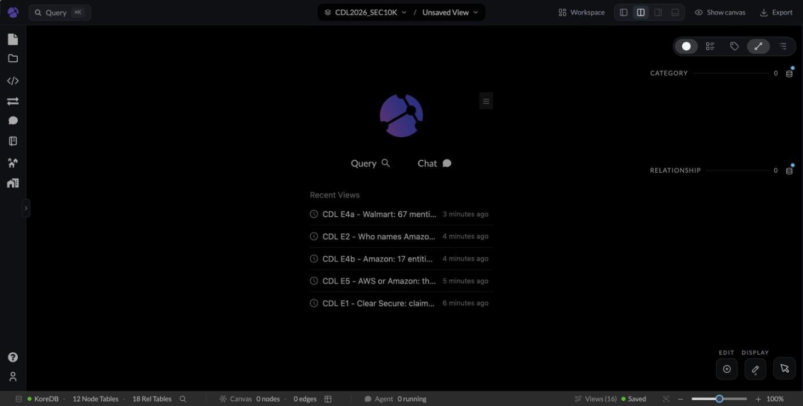
The project start screen. The CDL E… views are the exercise views.
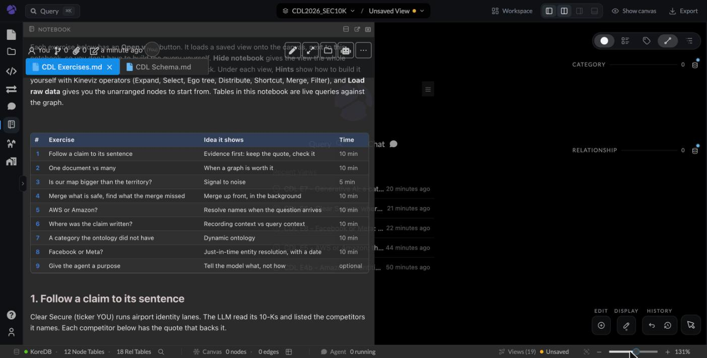
The notebook opens on the left; the graph canvas is on the right.
2. How the notebook works
You see
What it does
Start1 Quote2 One doc vs many …
Tabs at the top of the notebook. Each exercise has its own tab. Clicking a row in the exercise table on the Start tab also opens it, and each exercise ends with a Next button.
Open view E1
Loads a saved view (nodes, layout, colors) onto the canvas, next to the notebook. It replaces whatever is on the canvas.
Hide notebook
Gives the view the whole screen. To come back, click the Notebook icon on the left.
▸ Cypher behind this view
Click to unfold the query that pulls the same data. Paste it into Query (top left) to run it yourself.
▸ Hints: build this view yourself
Short hints for building the view with Kineviz operators: Expand, Select, Ego tree, Distribute along Y, Shortcut, Merge, Filter, Color by. The hints are the exercise; the saved view is the answer.
Load raw data
Inside the hints. Clears the canvas and loads the view's nodes without layout or styling, as a starting point.
Tables and big numbers
Live queries against the graph, run when the notebook opens.
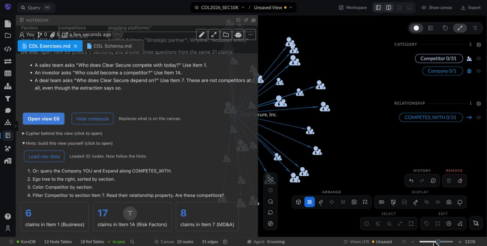
An exercise with its hints open, after Load raw data: unarranged nodes on the canvas, ready for Ego tree, Color by and Filter.
3. Exercise 1: follow a claim to its sentence (10 min)
Idea: evidence first. A claim is only as good as the sentence behind it, so keep the quote and check it.
Clear Secure (ticker YOU) runs identity lanes at airports. The LLM listed the competitors its 10-Ks name: 31 claims, backed by 26 quotes.
Click Open view E1. Left to right: the company, each competitor it named, and the quote behind each one.
In the table, pick 5 rows and click check. The SEC filing opens with the quote highlighted.
Mark each one: A word for word, B real words but cut and joined with "…", C not found.
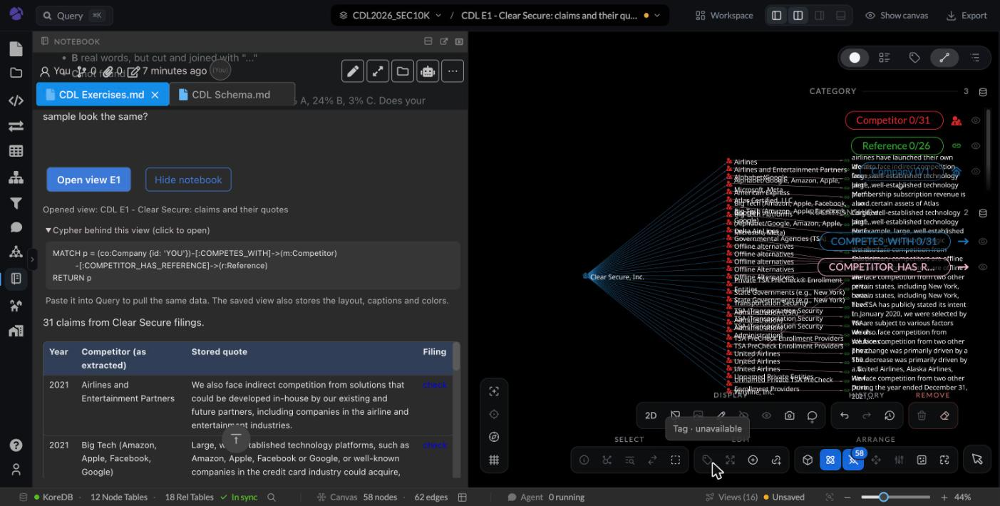
Exercise 1 with the view loaded and the Cypher unfolded. The table lists every claim with its stored quote and a check link.
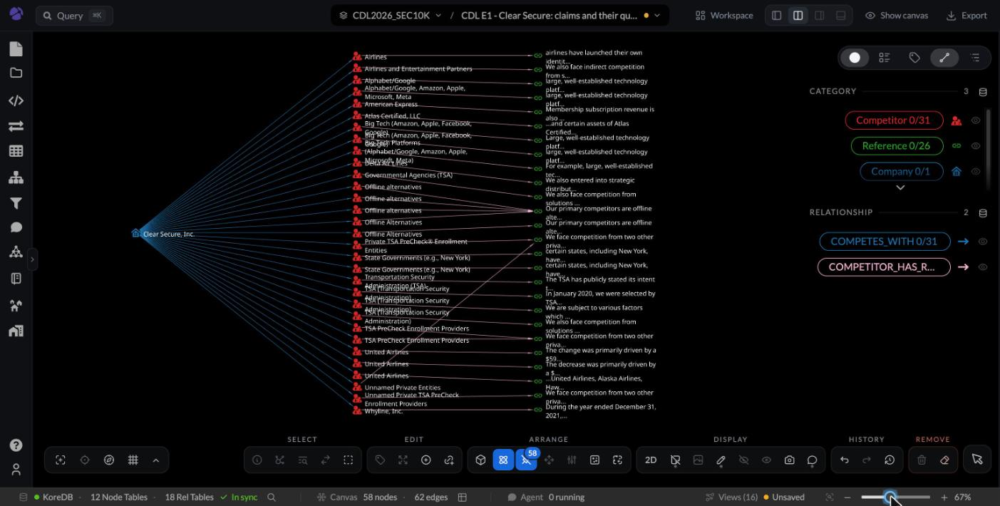
View E1 at full screen (Hide notebook): Clear Secure → 31 competitor claims → the quotes behind them.
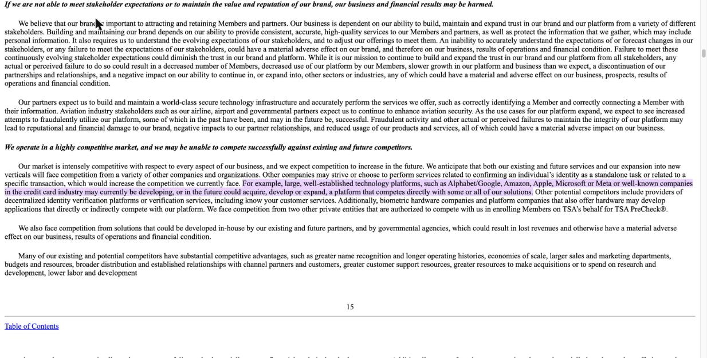
Clicking check on the 2024 "Big Tech" row. The highlighted sentence includes "or well-known companies in the credit card industry". The stored quote cut those words out and replaced them with "…".
Code checked all 56,953 quotes in this graph: 74% are in the filing as one passage, 24% are real words cut and joined with "…", 3% could not be matched by machine.
Discuss: does your sample of 5 look like 74 / 24 / 3? The cut in the 2024 quote dropped a whole group of competitors. The stored note was wrong, and only the source shows it.
4. Exercise 2: one document vs many (10 min)
Idea: a graph pays off when the answer is spread over many documents. Anthropic measured the same for agent memory: on questions that needed several documents, a linked map scored 87% against 73% for search alone; when one document had the answer, the map added nothing clear.
Ask a chatbot or search tool: "What does Apple say about AI in its 2024 10-K?" One filing has the answer; search does fine.
Ask the same tool: "How many companies named Amazon as a competitor each year?" The answer is spread over 2,068 filings.
Click Open view E2 and read the table: the graph answers with one query.
Filing year
2021
2022
2023
2024
2025
2026
Companies naming Amazon
14
24
16
17
20
1
40 companies name Amazon in some form across all years.
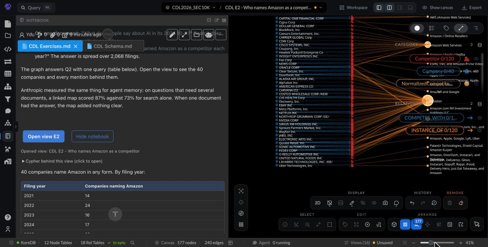
The count by year comes from one live query.
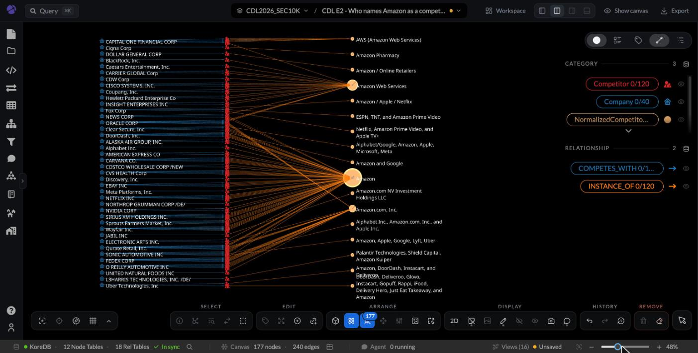
View E2: 40 companies → each mention → the Amazon entities the mentions were merged into.
Discuss: why the jump in 2022? Open a few quotes and read them. Why is 2026 only 1? Only one 2026 filing is in the data so far. Every answer needs an "as of" date.
5. Exercise 3: is our map bigger than the territory? (5 min)
Idea: signal to noise. "If my knowledge graph is larger than my original information set, what do I gain?" (Weidong Yang). Anthropic saw an agent build a wiki that grew larger than the documents it came from; it abstracted nothing.
Scroll to Exercise 3. The notebook measures the text in our map against the filing sections it came from, live:
Our map holds about 1/25 of the text it was built from.
Discuss: suppose we also extracted every product, person, place and number. When would the map pass 100%, and what would we gain? At the analysis step the LLM should get a short set of high-quality evidence, not every document. Picking that set is the map's job.
6. Exercise 4: merge what is safe, find what the merge missed (10 min)
Idea: some merges are right for any question, so they can be done up front, as a background pass. Anthropic calls such a pass "dreaming": reread the sources, merge duplicates, fix links.
When the graph was built, a background pass grouped 14,572 competitor names into 5,455 entities.
Click Open view E4a: Walmart. 67 mentions in 5 spellings all point to one Walmart: "Walmart" 41, "Walmart Inc." 20, "Walmart, Inc." 4, and two combined mentions.
Click Open view E4b: Amazon. 17 entities have "Amazon" in the name. "Amazon" and "Amazon.com, Inc." were never merged; the two AWS spellings were never merged; "Amazon and Google" was never split.
In the Amazon table, mark each entity: merge now (same company for any question), wait (depends on the question), or split (one name holding several companies).
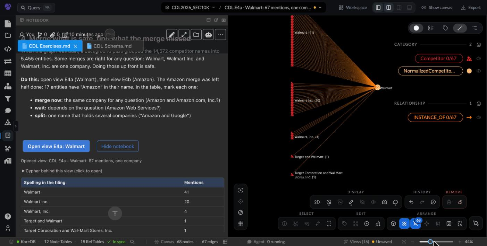
View E4a next to the notebook: the mentions grouped by how the filing spelled Walmart.
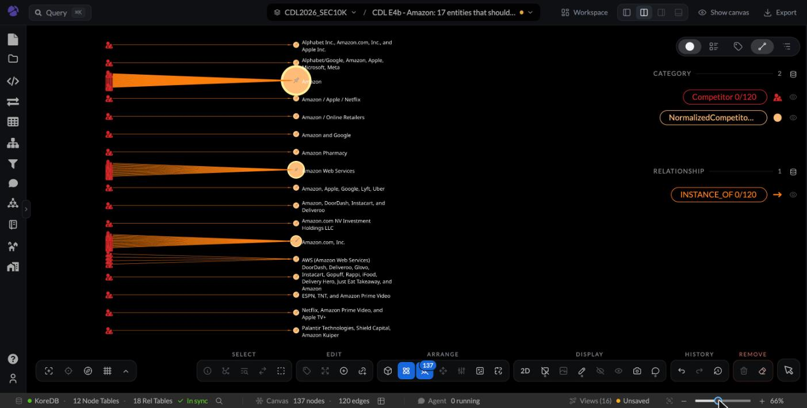
View E4b: each Amazon entity sits beside the mentions merged into it. Three big bundles, and many entities that should not exist on their own.
Discuss: which of the 17 would you merge for every question? Which only for some questions? The second group is exercise 5.
7. Exercise 5: AWS or Amazon? The question decides (10 min)
Idea: just-in-time entity resolution. Whether AWS counts as Amazon depends on the question, so we resolve it when the question arrives, not when the data loads.
Click Open view E5. Companies on the left; Amazon retail entities in orange, AWS in blue.
"Who names AWS as a cloud rival?" Count only the blue side: 11 companies.
"How many companies compete with Amazon in any form?" Count everything: 40.
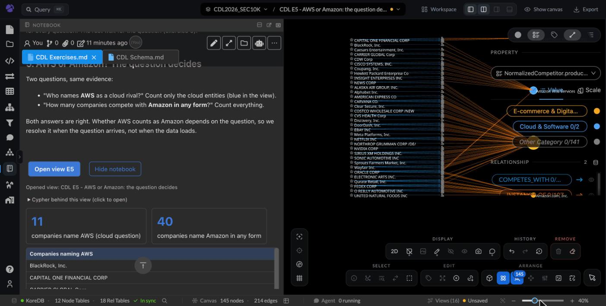
Two questions, two right answers, from the same evidence.
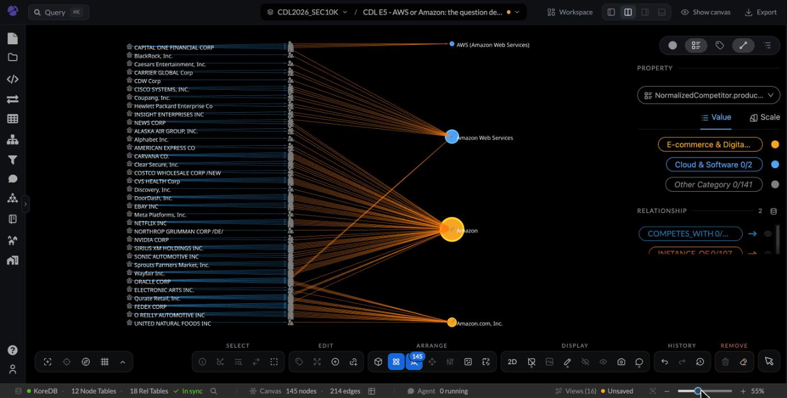
View E5 at full screen: the AWS (blue) and Amazon retail (orange) sides.
Discuss: if we had merged AWS into Amazon when the data loaded, which of the two questions could we no longer answer?
8. Exercise 6: competitor, target, or former partner? Recording context vs query context (10 min)
Idea: every claim carries its recording context (provenance): who wrote it, when, where in the document, in what words. The question brings the query context: who is asking, about which date, and for what. Keep the first with the claim; let the second decide which claims count.
JetBlue's 10-Ks name Spirit Airlines in 9 claims from 2021 to 2025. The pipeline stored every one as a competitor (COMPETES_WITH). The filings say four different things:
Filing year
Sections
Spirit is
In the filing's own words
2021
Item 1, 1A
a competitor
Spirit filed a complaint with the DOT about JetBlue's alliance with American; Spirit and Frontier announced an intention to merge
2022
Items 1, 1A, 7
an acquisition target
"On July 28, 2022, we entered into a Merger Agreement with Spirit, pursuant to which we would acquire Spirit."
2023
Item 1A, 7
a blocked merger
"the Court issued its Final Judgment and Order granting the plaintiffs' request for a permanent injunction of the Merger"
2024-25
Item 7
a terminated deal
"write off of Spirit-related costs for $532 million as a result of the termination of the Merger Agreement in March 2024"
Click Open view E6. Left to right is the filing year; color is the section: blue Item 1, amber Item 1A, red Item 7.
Answer three questions from the same 9 claims. An analyst in 2021 asks "Who does JetBlue compete with?": Spirit, yes. A deal team asks "What did JetBlue try to buy, and what did it cost?": Item 7 gives $28 million in 2022, $92 million in 2023, then a $532 million write-off. Someone asks today "Is Spirit part of JetBlue?": no; the merger was blocked and terminated in March 2024.
Also try Murphy USA (MUSA) and Walmart: in the same filing, Item 7 calls Walmart the partner whose stores host Murphy USA's stations, and Item 1A calls it a potential competitor with a right of first refusal on Murphy USA's properties.
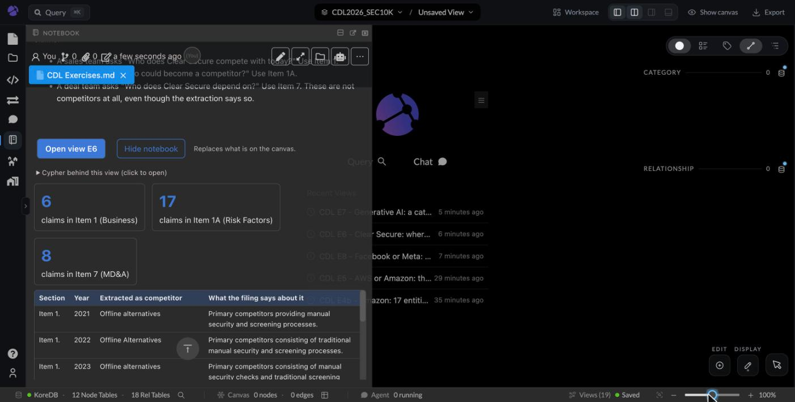
Exercise 6 in its own tab: what the filings say about Spirit, year by year.
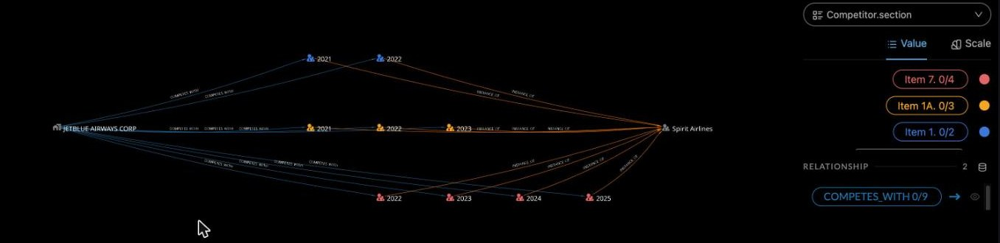
View E6: JetBlue on the left, Spirit on the right, 9 "competitor" claims by year (left to right) and section (color).
Why the extractor called them all competitors: our own prompt asked for competitors with a free-text relationship field and never said what a competitor is. Across the whole graph, only 34% of the 3,145 Item 7 "competitors" are described as competing or rivals (Item 1: 77%, Item 1A: 66%); most of the rest read like partners (851) and acquisitions (401). The quote check in Exercise 1 cannot catch this, so the eval loop needs a second check on meaning.
Discuss: a graph that kept only the edge JetBlue -COMPETES_WITH-> Spirit would give all three questions the same answer. Compare Exercise 8: there the name changes over time; here the relationship does.
9. Exercise 7: a category the ontology did not have (dynamic ontology) (10 min)
Idea: the ontology is a lens applied when the question arrives, not a box filled once. Keep the evidence; add or change categories as versions, without re-extracting anything.
The risk ontology in this graph was fixed up front: 17 categories, one of them "AI & Emerging Technology". Generative AI barely existed as a business risk in 2021 (ChatGPT launched in November 2022). The fixed category is several times too broad to answer "Which companies worry about generative AI?", so we define a new category from the kept text, at question time:
Filing year
Companies with an "AI & Emerging Technology" risk (fixed, v1)
Companies with a generative-AI risk (defined now, v2)
2021
83
0
2022
104
2
2023
244
51
2024
322
94
2025
364
90
The generative-AI risks were filed under 11 different fixed categories: 265 under AI & Emerging Technology, but also 57 under Cybersecurity, 25 under Legal & Litigation, 21 under Competition (one risk can sit in several).
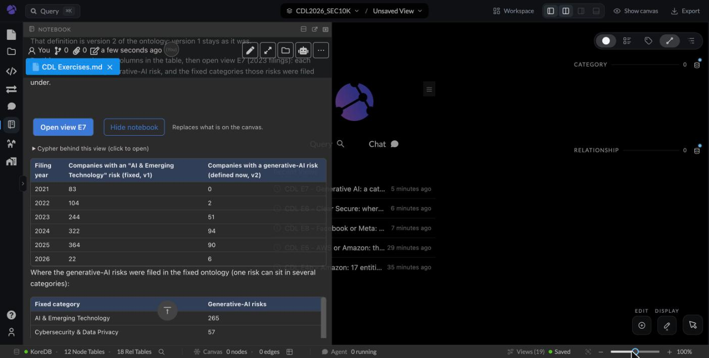
Version 1 (fixed category) next to version 2 (defined at question time), by year.
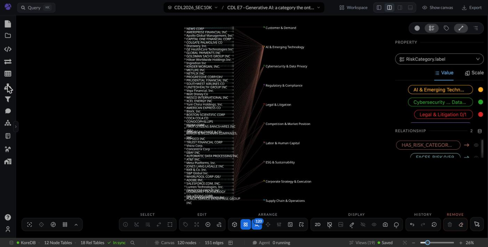
View E7 (2023 filings): 51 companies, one dot per generative-AI risk, fanning out to the fixed categories they were filed under.
Discuss: is "generative AI" a type of risk, or a theme that cuts across types (cyber attacks, lawsuits, competition)? With a fixed ontology someone had to decide in advance. Here the question decides, and the answer can be checked against the quotes.
10. Exercise 8: Facebook or Meta? Entity resolution with a date (10 min)
Idea: just-in-time entity resolution. Whether two names are one thing depends on the question, and which name is right depends on the date. Store the dated mentions once; decide when the question arrives.
Facebook, Inc. renamed itself Meta Platforms on 28 October 2021. Filings kept using both names for years: Sirius XM still writes "Facebook" in 2025. The graph keeps two entities, Facebook and Meta.
Question
Answer
Companies naming the Meta entity
4
Companies naming the Facebook entity
5
"Which companies name Meta as a competitor?" (Facebook = Meta, same company)
8
"Which companies talk about the Facebook app itself?"
keep them apart
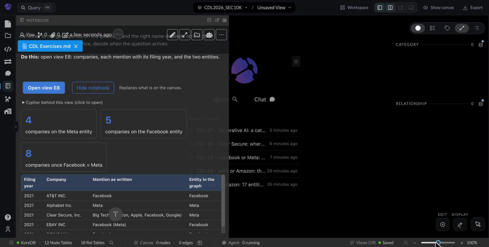
Every mention with its filing year and the entity it landed on.
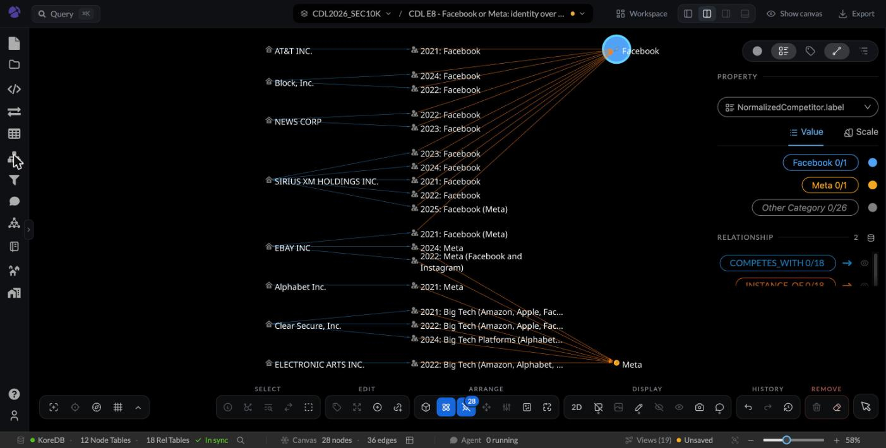
View E8: AT&T, Block, News Corp and Sirius XM say "Facebook"; Alphabet, Clear Secure and EA say "Meta"; eBay uses both.
Discuss: Clear Secure's 2021 mention reads "Big Tech (Amazon, Apple, Facebook, Google)" but landed on Meta; eBay's 2021 "Facebook (Meta)" landed on Facebook. Errors, or two different things (the app vs the company)? Compare with exercise 5: AWS vs Amazon is about the question; Facebook vs Meta is also about the date.
11. Exercise 9: give the agent a purpose, not a rule (optional)
Idea: Anthropic found that telling a model what memory is for worked better than fixed rules on how to use it. The same holds for an ontology, and for the agent itself.
A skill is a short markdown file the in-app agent reads before it answers. It lives in Project Files under .agents/skills/<name>/SKILL.md. The project already has two: company-competitor-profiler and company-risk-analyst.
Open the Agent panel (speech-bubble icon on the left). In one chat ask "How many competitors does Apple have?" Start a new chat (+) and ask "I'm sizing Apple's cloud competition for a board memo. How many competitors does Apple have?"
Then ask the agent: "Are you getting the right result?" Judge for yourself too: did it count mentions, entities or parent companies? Did it say which, and did it ask you before answering?
If not, consider building a skill to give the agent the purpose behind these questions. In a new chat, describe how you want it to answer, in your own words: who asks, what the answer is for, and what a good answer must show. Then ask it to create a skill that captures this, named <your-initials>-competitor-count.
Ask it to show you the skill. Push back where it turned your purpose into rules or queries, and have it update the skill.
Start a new chat and ask the same two questions again.
Hint: what to tell the agent, and what to watch for
Tell it why people ask: a board memo, a deal, a market scan. Each needs a different count.
Ask it what "competitor" can mean in this graph: a mention in one filing, an entity, a parent company. Let it look at the schema and tell you.
Tell it what a good answer shows: which meaning it counted and why, the quotes behind it, and when to ask you first.
Watch the draft for rules like "Count NormalizedCompetitor nodes and return the number". Ask for a purpose instead, like "The answer goes into a decision, so say which count you used and why it fits the question".
The skill's description line decides when the agent uses it. Check that it names the question.
Compare with company-risk-analyst/SKILL.md: it is mostly a recipe of steps and queries.
Compare before and after: does the plain question now get a question back? Does the board-memo question get a different count, and does the agent say why? Where did the agent turn your purpose into rules, and did that help? If the schema changed tomorrow, which parts of the skill would still be right?
Sharing a project with others? Put your initials in the folder name. Everyone's agent sees every skill in the project, which is a discussion of its own.
12. What is in the graph (schema)
A second notebook, CDL Schema.md, defines every kind of node and relationship in plain words, with live counts. Its button Draw one example of everything puts one real example of all 12 node types on the canvas.
Layer
Nodes
In plain words
Source
Company, Document, Section, Reference
The filings themselves, down to the quoted sentence (Reference). This is the evidence.
Claims
Competitor, Risk, Market, Opportunity
What the LLM says each filing says. One node per mention.
Groups added afterwards, so you can count across filings. A judgment, not a fact.
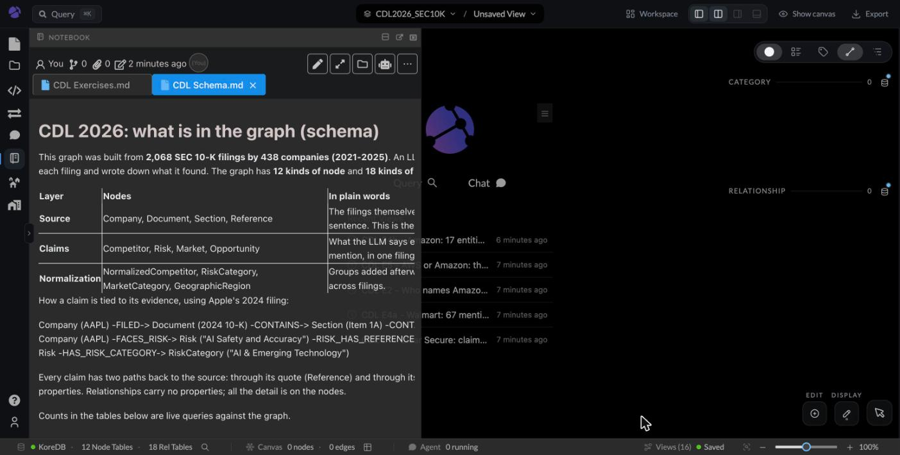
The schema notebook.
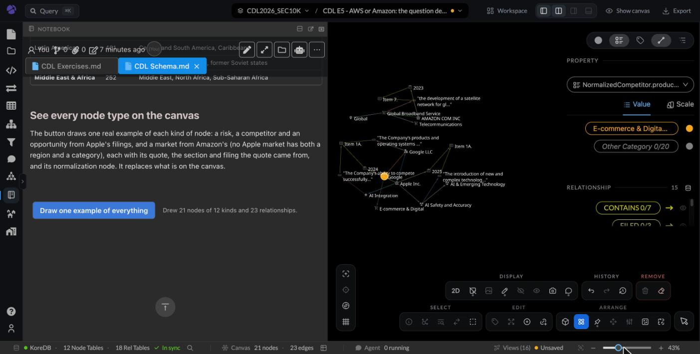
One example of every node type: 21 nodes of 12 kinds.
13. Words used in this guide
Word
In plain words
Example
Node
One thing in the graph.
The company Clear Secure; one quote.
Relationship
A typed link between two nodes.
COMPETES_WITH from Clear Secure to "United Airlines".
Claim
Something the LLM says a filing says.
"Clear Secure competes with Big Tech Platforms."
Reference (quote)
The sentence from the filing that backs a claim, with a link that opens the filing at that sentence.
"For example, large, well-established technology platforms…"
Mention vs entity
A mention is a name as written in one filing; an entity is the real-world thing several mentions refer to.
"Walmart Inc." (mention) → Walmart (entity).
Entity resolution
Deciding which mentions are the same real-world thing.
Is "AWS" the same as "Amazon"?
View
A saved picture of the canvas: nodes, layout, colors.
CDL E5 – AWS or Amazon.
Recording context (provenance)
Where, when, by whom and in what words a claim was written. It travels with the claim.
JetBlue 10-K 2024, Item 7, "termination of the Merger Agreement in March 2024".
Query context
Who is asking, and for what purpose. It comes with the question.
Someone asking today whether Spirit Airlines is part of JetBlue.
Ontology
The list of kinds of things and links the graph uses.
The 17 risk categories.
Dynamic ontology
Categories defined or changed when the question arrives, as new versions, over evidence that stays the same.
"Generative AI risk", defined from the risk text in 2026.
Just-in-time entity resolution
Deciding whether two names are one thing at question time, using the question and the date.
Facebook = Meta for "who names Meta?"; apart for "who talks about the Facebook app?".
Cypher
The query language the graph understands.
MATCH (c:Company) RETURN c LIMIT 5
14. If something looks wrong
You see
Do this
The notebook shows editing tools and wide margins
It opened in edit mode. Click the pencil icon at the top of the notebook to switch back to reading mode.
A view is squeezed next to the notebook
Click Hide notebook; the view gets the full screen. Click the Notebook icon on the left to return.
A check link opens the filing but doesn't jump to the quote
10-K pages are large; wait for the page to finish loading. If it still doesn't jump, the quote was cut so heavily that the browser can't find it: that is a B or C in exercise 1.
Counts differ slightly from this guide
The notebook queries the graph live; small differences mean the data was updated after this guide was written (8 Nov 2026).